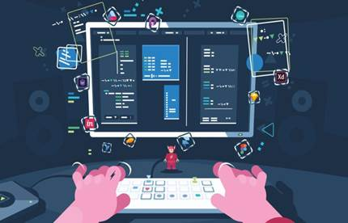
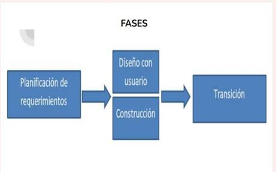

El diseño rápido por el usuario es una metodología que implica que los usuarios finales de un producto o servicio estén directamente involucrados en el proceso de diseño. En lugar de dejar todo el trabajo de diseño a los profesionales, los usuarios se convierten en participantes activos y colaboradores importantes en el proceso.
La idea detrás del diseño rápido por el usuario es que los usuarios tienen una comprensión más profunda de sus propias necesidades y deseos, lo que a su vez mejora el diseño del producto o servicio. Al trabajar en estrecha colaboración con los usuarios, los diseñadores pueden obtener información valiosa directamente de ellos sobre cómo podría ser el diseño de un producto o servicio para satisfacer mejor sus necesidades.

Este proceso implica crear prototipos de diseño rápidamente y recibir retroalimentación de los usuarios para realizar cambios sobre la marcha. Los diseñadores y los usuarios trabajan juntos para crear y modificar el diseño hasta que se logre un diseño final que satisfaga las necesidades únicas de los usuarios.
El diseño rápido por el usuario se utiliza comúnmente en el diseño de productos digitales como aplicaciones móviles y sitios web, pero también se puede aplicar a productos físicos e incluso a servicios. Al involucrar a los usuarios desde el principio, se puede reducir el tiempo y los costos de desarrollo, se mejora la eficiencia y se puede obtener un mejor producto final que satisfaga las necesidades y deseos de los usuarios.
(RAD, de sus siglas en inglés
Rapid Application
Development)
Describe un método de
desarrollo de software que hace
mucho hincapié en la creación
rápida de prototipos y la
entrega iterativa.
Al utilizar un método rápido de desarrollo de
aplicaciones, los diseñadores y desarrolladores
pueden utilizar agresivamente el conocimiento y
los descubrimientos obtenidos durante el
proceso de desarrollo para dar forma al diseño o
alterar completamente la dirección del software.
● Generar rápidamente un código productivo
● Adaptabilidad simple
